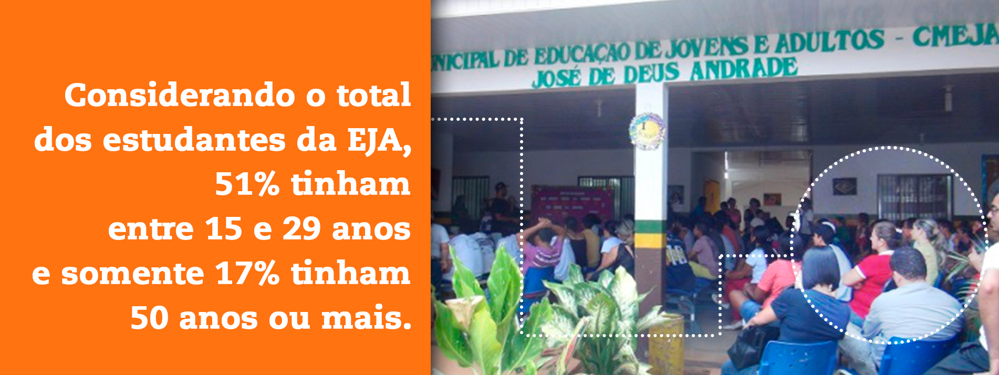
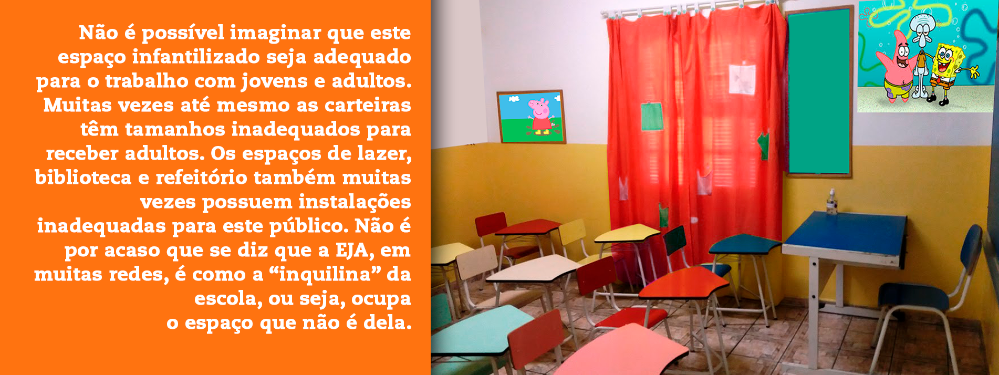
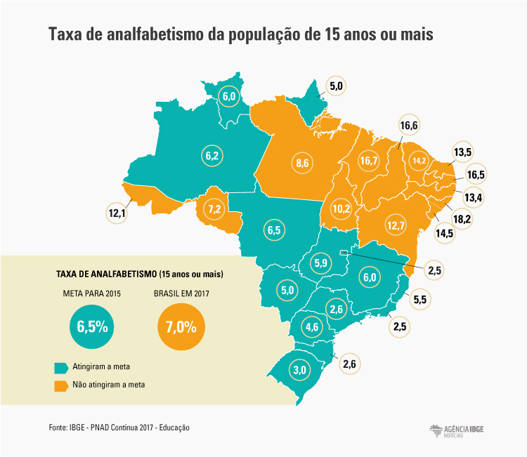
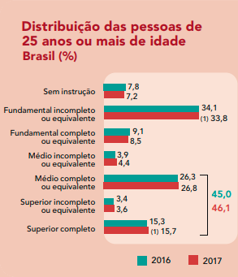
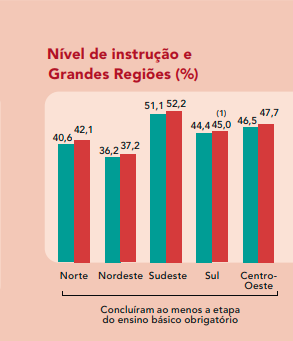
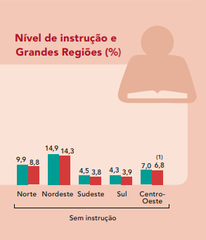

Módulos
Clique nos itens abaixo para visualizar os módulos.
Não se pode entrar em uma sala de aula com um programa de curso que não considere a especificidade dos aprendizes. É evidente que não podemos pensar em conteúdos e metodologias propostas para o ensino médio em salas de aula das séries iniciais do ensino fundamental. Do mesmo modo, não podemos desenvolver uma proposta de trabalho para a educação de jovens e adultos sem considerar primeiramente quem são os estudantes.
Uma das principais marcas da Educação de jovens e adultos em todos os lugares é a existência de uma grande diversidade de sujeitos. Vamos encontrar pessoas em uma sala de educação de jovens e adultos com diferentes idades, trajetórias profissionais e experiências pessoais. Além disso, ainda estarão presentes pessoas que por diversas razões foram privadas do direito à educação na sua infância ou adolescência. São pessoas que foram expulsas da escola devido ao preconceito, por possuírem alguma deficiência ou ainda por terem frequentado escolas que não foram capazes de atender às suas necessidades.
Com isso, muitos professores precisam se perguntar como definir propostas de trabalho em sala de aula para conjuntos tão diversos. Deve-se considerar também que jovens e adultos não aprendem do mesmo modo que uma criança e, assim, a escola de EJA deve estar preparada para colocar em prática um currículo específico para as necessidades de aprendizagens de seus sujeitos, tornando-se cada vez mais autônoma dos modelos definidos para crianças e adolescentes.
Ainda com relação à diversidade, vale analisarmos a questão específica da diversidade etária. Na rede municipal de São Paulo, em 2016, por exemplo, a diversidade etária estava presente de diferentes modos, níveis e formas de atendimento.

Mas quando nos referimos às turmas de alfabetização, evidencia-se que 33% tinham 50 anos ou mais e apenas 9% tinham entre 15 e 29 anos, ou seja, existem mais alunos de maior idade nas séries iniciais da EJA e mais alunos jovens nas séries finais do ensino fundamental e ensino médio. Os dados indicam a diversidade etária presente até mesmo dentro das diferentes etapas, ampliando ainda mais o desafio de se pensar a EJA como um currículo que precisa considerar a diversidade.
Para lidar com essa diversidade, é necessário criar uma escola original, criativa e, principalmente, adequada aos tempos e condições de vida de diferentes jovens e adultos. O material didático, o espaço da sala de aula, a estratégia, as propostas de trabalho, nada deve ser igual ao que se faz com as crianças. Precisamos nos colocar o desafio de criar uma outra escola onde jovens e adultos se sintam protagonistas de sua aprendizagem e não pessoas envergonhadas e culpadas por não terem concluído os estudos na chamada “idade própria”. Não podemos esquecer que estudar é um direito do sujeito em qualquer momento da vida.
No que se refere ao desenvolvimento das propostas de aula, é necessário ter sensibilidade e capacidade de descobrir o que pode fazer sentido para este grupo de sujeitos ou ainda saber como as diferentes trajetórias e experiências de vida desses pode contribuir para que os conhecimentos escolares possam ser desenvolvidos em sala de aula fazendo sentido para todos e todas.
Para tanto, torna-se necessário fazer uma seleção de temas e conceitos a serem trabalhados que, mais uma vez, não segue a mesma trajetória proposta para crianças. Um adulto precisa aprender aquilo que fizer sentido para sua melhor participação na vida social, seja para avançar nos estudos, no trabalho ou nas tarefas da vida social que exigem o uso de uma cultura letrada.
Outro elemento central, mas muitas vezes esquecido, da especificidade da educação de jovens e adultos é a experiência negativa que a escola representa na maioria das trajetórias escolares vividas por esses sujeitos. Grande parte deles foram em algum momento expulsos da escola, seja porque foram reprovados sucessivas vezes, seja para trabalhar, pela gravidez, por preconceito ou pela simples ausência de escola na sua localidade. Sofrem com o estigma de terem abandonado a escola, que aquilo não deu certo para ele. Assim, voltar para a escola quando adulto é ter de reviver o que já não deu certo, que é uma relação traumática. Dessa forma, quando consegue voltar, logo que alguma dificuldade ocorre, é comum ver estes alunos abandonarem mais uma vez a escola.
Para que isto não ocorra é essencial ter o acolhimento como premissa de uma escola de educação de adultos. Professores e gestores de uma escola de adultos têm que estar preparados para receber alunos diversos e também pessoas para quem a escola foi traumática no passado. Nesse sentido, é preciso pensar em estratégias que devolvam a este sujeito o prazer de aprender, mostrando que ele tem capacidade para seguir adiante.
Leitura para discussão
CATELLI Jr, Roberto; ESCOURA, Michele et al. Proposições de organização curricular na educação de jovens e adultos. Cadernos Cenpec, São Paulo, v.3, n.2, p.162-186, jun. 2013.
Aperte o play e escute o áudio sobre a leitura proposta para discussão.

Clique nos botões abaixo para saber qual a diversidade etária da EJA em seu estado.
Como observamos no vídeo, mesmo sem recorrer a aprendizados valorizados na trajetória escolar, as pessoas que possuem menor escolaridade desenvolvem aprendizagens com base nas suas experiências profissionais e pessoais ao longo da sua trajetória de vida. Nesse sentido, pode-se afirmar que são possuidoras de saberes diversos que podem também estar ancorados nas tradições familiares e da própria comunidade. Podemos definir que existe uma aprendizagem que se dá por meio da escola e outro que ocorre com base na experiência.
Assim, quando estas pessoas retomam os estudos, é fundamental reconhecer que estamos lidando com pessoas que possuem ricos conhecimentos que precisam ser considerados para o desenvolvimento de um trabalho escolar nas várias áreas do conhecimento. Por quê?
A pesquisadora portuguesa Carmen Cavaco, explica que:
A reduzida participação dos adultos na modalidade de educação formal contribui para fortalecer a hipótese de que “[...] as actividades quotidianas do trabalho, lazer e vida social apesar de não terem propriamente uma finalidade educativa explícita são fontes de aprendizagem” (Pain, 1990), experiencial muito importantes, caso contrário as pessoas não estariam em condições de fazer face às exigências sociais, profissionais e familiares. (...) Aprende-se por ensaio e erro, repetição e imitação. (...) Para algumas dessas pessoas a formação experiencial é a única via de acesso ao conhecimento e a experiência é transformada no instrumento mais importante de sobrevivência e de acção. Ou seja, a experiência é fundamental na aprendizagem de todos, mas ocupa um lugar ainda mais relevante, tornando-se mesmo imprescindível, junto das pessoas que, por diversas razões, registaram dificuldades ou impossibilidade de acesso à educação formal. A formação experiencial funciona nestes casos de uma forma compensatória, sabendo-se que “[...] os adultos que têm fortes lacunas escolares, dispõem, por vezes, de experiências profissionais e sociais muito ricas” (Dominicé, 1989, p. 64). A situação excepcional em que vivem os adultos não escolarizados leva-nos a dizer que constituem sujeitos privilegiados para o estudo da formação experiencial, pois os saberes que possuem são unicamente resultantes da sua experiência de vida. P.956-957
A autora entrevistou um conjunto de pessoas adultas não escolarizadas e concluiu que apesar de não terem ido à escola tinham adquirido vários conhecimentos no âmbito familiar e profissional. Muitos sabiam ler e escrever, conheciam números, sabiam ler gráficos, fazer cálculo mental e até mesmo conversação básica em língua estrangeira. Conforme ela:
Os adultos entrevistados apresentam um conjunto de saberes que são essenciais para assegurar a sua autonomia na vida quotidiana. Entre estes saberes destacam-se: situar-se no tempo de modo a identificar os dias, os meses do ano, as estações, embora não o façam através da interpretação do calendário, telefonar, ver as horas, usar os electrodomésticos, interpretar as facturas da electricidade e do telefone, conduzir, usar o dinheiro em Portugal e estrangeiro, fazer câmbios. O cálculo mental é um saber apresentado por todos os entrevistados, domínio onde não chegou a ocorrer regressão ao longo do tempo, o que se deve ao uso frequente deste saber no seu dia-a-dia. Os adultos revelaram uma grande capacidade de cálculo mental e, em alguns casos, uma rapidez notável na realização de contas. Através do seu discurso percebe-se a importância que atribuíram desde crianças à realização do cálculo mental, o que está, em grande medida, associado a um domínio da vida directamente ligado à sobrevivência.
Ao concluir a pesquisa, Cavaco afirma que:
Os adultos não escolarizados, contrariamente, ao que habitualmente se divulga são possuidores de uma grande diversidade de saberes e apresentam uma enorme capacidade de aprendizagem, o que é fundamental para a sua vida em sociedade.
CAVACO, Carmen. Formação Experiencial de Adultos Não Escolarizados: saberes e contextos de aprendizagem. Educação & Realidade, Porto Alegre, v. 41, n. 3, p. 951-967, jul./set. 2016.
Aperte o play e escute o áudio sobre o artigo indicado.
Os saberes aprendidos por meio da experiência e sua articulação com os conhecimentos escolares
Utilizar os saberes aprendidos pela experiência em sala de aula é uma forma de valorizar os conhecimentos que os estudantes já possuem, que não podem ser negados ou desconsiderados. Além disso, é possível articular o saber escolar ao saber obtido por meio da experiência. Nesse sentido, devemos fazer uso dos conhecimentos prévios dos educandos para fortalecer as aprendizagens escolares e ampliar aquelas que estão fundadas na experiência. Exemplo disso é o uso de extratos bancários, interpretação de contas de luz, uso de moedas, análise de preços e outros elementos da vida cotidiana no ensino da matemática.
Ao planejar as aulas, o professor da EJA precisa aliar os saberes que os alunos manifestam aos saberes escolares numa tentativa de provocar os alunos a pensar em possíveis relações entre tais saberes”.
Felipe Alves Machado
Jackson Rodrigo Soares
Michele R. Dias Veronez
Suelen Cristina Richeski
Clique na imagem abaixo para conhecer uma sequência didática articulando os saberes adquiridos por meio da experiência e os conhecimentos escolares.
Na área de ciências humanas, por exemplo, não se pode deixar de estudar a forma de organização do trabalho na sociedade capitalista sem fazer referência às próprias experiências de trabalho desses jovens e adultos. É preciso criar estratégias para que as pessoas narrem suas experiências profissionais para que possam, a partir dela, refletir sobre o seu significado no âmbito da sociedade capitalista. É possível ser desenvolvida uma atividade de pesquisa entre os alunos para levantar alguns aspectos da trajetória profissional dos estudantes seja no que se refere à jornada e condições de trabalho, seja sobre as relações humanas e de poder que vivenciou nesses espaços. Vale levantar também as aprendizagens que teve no campo profissional. A partir dos dados levantados e das narrativas dos estudantes torna-se possível fazer uso de alguns conceitos da área das ciências humanas para explicar algumas semelhanças encontradas na história profissional dos estudantes da turma. Além disso, pode-se abrir espaço para que os estudantes possam realizar oficinas em que ensinem aos demais algumas aprendizagens que tiveram na sua vida profissional.
O saber obtido pela experiência na sala de aula de EJA
Conforme a Pesquisa Nacional por Amostra de Domicílios (PNAD), em 2017, o Brasil tinha 7% de sua população de 15 anos ou mais na condição de analfabeta. O maior percentual de analfabetismo ocorre no Nordeste, registrado em 19,3%. Na faixa etária de 60 anos ou mais, o índice nessa região alcança 38,6%.
Além disso, apenas 46,1% das pessoas com 25 anos ou mais concluíram o ensino médio no Brasil. Destaca-se também que 33,8% dos brasileiros dessa faixa etária não completaram o ensino fundamental.
Com isso, podemos afirmar que vivemos em um país que mantém uma grande dívida social com a população, com o maior número absoluto de analfabetos da América Latina e grande parte da sua população sem nem mesmo ter completado o ensino fundamental.


Fonte: IBGE, Diretoria de Pesquisas, Coordenação de Trabalho e Rendimento, Pesquisa Nacional por Amostra de Domicílios Contínua 2016-2017. (1) Variação não significativa ao nível de confiança de 95%.
Um estudo produzido pela Ação Educativa em parceria com o Instituto Paulo Montenegro, o Indicador de Alfabetismo Funcional (INAF), vem desde 2001 analisando o nível de alfabetismo dos brasileiros. A proposta é medir o quanto os brasileiros de 15 a 64 anos conseguem fazer uso da leitura, da escrita e dos problemas matemáticos para resolver problemas relacionados à vida cotidiana.
Os resultados obtidos entre 2001 e 2018 mostram que 30% da população brasileira pode ser classificada como analfabeta funcional conforme a metodologia do INAF que aplica um teste cognitivo com 32 questões, para uma amostra de 2002 pessoas nas diferentes regiões do país. Ser analfabeto funcional significa para o INAF estar classificado em uma escala de cinco níveis nos seus dois níveis inferiores, o que significa que esta pessoa consegue até reconhecer letras, números, palavras e realizar algumas tarefas cotidianas fazendo uso da leitura e da escrita, mas de uma forma muito limitada.
Nível de alfabetismo da população brasileira de 15 a 64 anos. INAF, 2001 – 2018
Veja também
Relatório com os resultados do Indicador de Alfabetismo Funcional na edição de 2018.
Este conjunto de dados revela o grande desafio de fazer com que jovens e adultos no Brasil possam usar a leitura para resolver problemas do seu cotidiano e ampliar sua participação na sociedade. Com isso, consideramos que desenvolver atividades de leitura na escola e na comunidade é essencial para que os brasileiros possam fazer novas descobertas e ampliar sua capacidade de participação na vida social.
Leituras para jovens e adultos
A formação de leitores autônomos envolve desafios tanto do âmbito do acesso a acervos diversificados quanto do desenvolvimento de habilidades leitoras. Reafirmar a especificidade da EJA é essencial para combatermos a transposição pura e simples de práticas da educação infantil e da escola para crianças e jovens para o âmbito da educação de pessoas jovens e adultas.
A visão positiva da diversidade que caracteriza a EJA é o ponto de partida para o desenvolvimento de práticas pedagógicas que considerem a especificidade do processo de ensino e aprendizagem na modalidade e potencialmente transformadoras das trajetórias escolares dos estudantes.
Considerando a diversidade etária, étnico-racial, de origem, de gênero, de orientação sexual, religiosa, linguística e cultural presente nas salas de EJA propomos o deslocamento do trabalho focado nas carências facilmente observáveis no domínio das habilidades leitoras para o desafio de construir caminhos que levem a emergir as diferentes experiências e visões de mundo que habitam as salas de EJA.
Intencionalidade educativa e disponibilidade dos professores a novos aprendizados são elementos essenciais para que as diferentes identidades e experiências presentes na sala de aula emerjam e sejam identificadas vias para a construção de processos de ensino comprometidos com a valorização de experiências concretas e potencialmente transformadoras do fazer pedagógico em todas as suas dimensões.
Uma das experiências bem-sucedidas de desenvolvimento de um trabalho de leitura na EJA são as rodas de leitura, também chamados de círculos de leitura, ou ainda, como ficou conhecida a experiência de uma escola catalã, as tertúlias dialógicas literárias.
Intencionalidade educativa e disponibilidade dos professores a novos aprendizados são elementos essenciais para que as diferentes identidades e experiências presentes na sala de aula emerjam e sejam identificadas vias para a construção de processos de ensino comprometidos com a valorização de experiências concretas e potencialmente transformadoras do fazer pedagógico em todas as suas dimensões.
Conhecendo mais sobre Tertúlias dialógicas literárias
NIASE – Núcleo de Investigação e Ação Social e Educativa.
Marigo, Adriana; Mello, Roseli; Amorim, Sabrina. Tertúlia literária dialógica e educação de pessoas jovens e adultas: encontro entre literatura e vida. Leitura: Teoria & Prática (suplemento), n.58, jun.2012, p. 1497-1505.
FLECHA, Ramon. Compartiendo palabras: el aprendizaje de las personas adultas a traves del dialogo. Barcelona: Paidos, 1997. Escola La Verneda: tertúlias literárias dialógicas.
Instituto Natura – Tertúlias literárias dialógicas.
Aperte o play e escute o aúdio sobre tertúlias literárias.
Indicações de textos literários para a educação de jovens e adultos
Na estante abaixo temos algumas indicações de leitura, incluindo sugestões de como trabalhar o livro na sala de aula, além de outras informações relativas à obra. Clique nos livros para ver suas fichas de leitura.
Iniciativa

Realização

Parceiros investidores